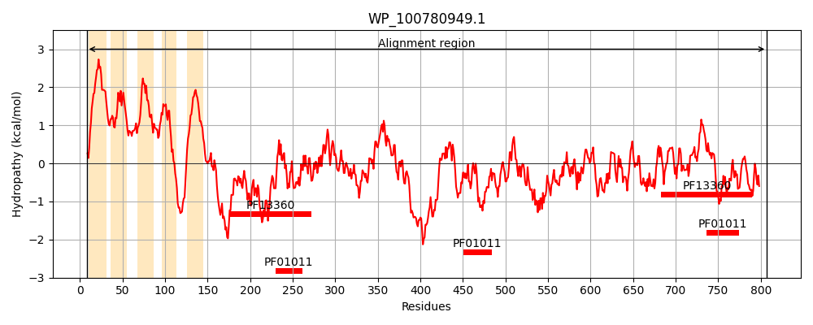
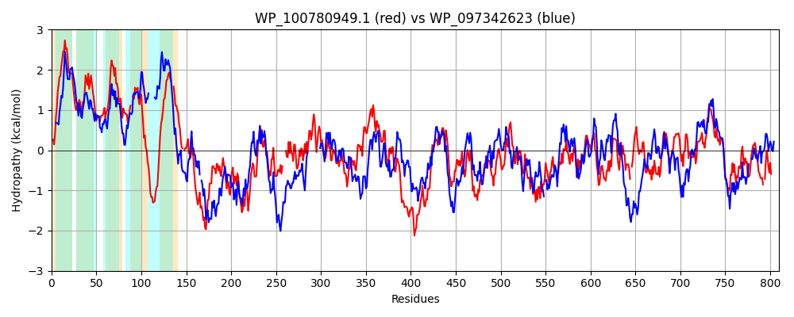

Hit Accession: WP_097342623
Hit TCID: 9.B.306.4.2
Hit Description: gnl|BL_ORD_ID|21651 gnl|TC-DB|WP_097342623.1|9.B.306.4.2 pyrroloquinoline quinone-dependent dehydrogenase [Escherichia coli]
Mach Len: 810
e:0.000000
Query TMS Count : 5
Hit TMS Count: 5
TMS-Overlap Score: 4.000000
Predicted Substrates:None
BLAST Alignment:
Score: 1479 , Bit scores: 574 bits, E-value: 0.0e+00, Alignment length: 810, Percentage identity: 39
Query: 8 SSGWLGLWCLLVGVILLATGLFFVIGGYKLVSLGGSWYFLIAGVITLLAAIQFFRRRSSAVWLFALVFVGTLIWALFDAGFDFWPLVSR--LMVPAGLMLLAAATWPALRKHEGKPYSTKGAWGGCVVLVIAMG--VTFVQMFQPHP-TVAFSGEKLPLVPVKEDAKQQNWDHYGNTAGGSRFVALDQITRDNVKNLKPVWTFHTGDTPLSPDGNGAEDQQTPLQVGDRVFLCTPHNNVIAVDADSGKEIWRAEINAK---SAIWMRCRGLAYFDATKPLTQPTVAGSTPILPAQVAPGAACQRRILMNTIDDRLIALDADNGQFCPDFGTNGSVNLREGMGAAADPSYVLTSAPTLAGTTVVVGGRVADNVSTDMPGGVVRGYDVITGQQRWAFDPRNPDPNHVLQPGEHYKRSSANSWAPMSWDASMNTLFIPMGSSSVDLWGADRIQGDHKYATSILALDATTGKEKWVYKTVRNDLWDFDVPMQPSLVDFPTKEGNKPAVVVGTKAGQIYVLDRLTGQPLTEVKEVPVKPADIPNEQYPATQPRSVGMPQIGAETLKESDMWGATPFDQLVCRISFKSMRYDGLYTMPGTDVSLSFPGSLGGMNWGSLSTDPNNHYIFVNDMRLGLWVQLIKQDPQSAVAN-TGGEAVNAGMGAVPMKGTPYSVNKNRFMSPLGIPCQKPPFGTLSAIDLKTQKIVWQVPVGTVQDTGPFGIKMRAQMPIGMPTLGGTLATQGGLVFIAGTQDYYLRAFDSSTGEEVWKARLPVGSQGGPISYVSPKTGKQYILISAGG-ARQSPDRGDYVIAYAL 807
++G L L + GL+ +IGG LV++GGSWY+ IAG++ L A +R + +A+WL+A + +GT+IW +++ GFDFW L R ++V G+ L+ W L GA VV ++ G +T+ P S P + A Q+W YG G RF L QI DNV NLK W F TGD D ++ TP++VGD ++LCT H + A+DA SGKE W + K S + CRG++Y +A P V A C RRI++ D RLIA++A+NG+ C F G +NL+ M Y TS P + T+V+ G V DN ST GV+RG+DV TG+ WAFDP DPN + + +S NSWAP ++DA ++ +++PMG ++ D+WG +R +YA+SILAL+ATTGK W Y+TV +DLWD D+P QP+L D P + K G I+VLDR G+ + E PV + TQP S + + L +DMWGAT FDQLVCR+ F +RY+G++T P +L FPG+LG WG +S DPN N M L +LI + P + + + G P G PY V N ++SP G+PC++P +G +SA+DLKT ++VW+ +GT QD+ PF + + +GMP LGG ++T G ++FIA T D YLRA++ S GE++W+ RLP G Q P++Y GKQY++ISAGG GDY++AYAL
Sbjct: 5 NTGSRRLLVTLTALFAALCGLYLLIGGGWLVAIGGSWYYPIAGLVMLGVAWMLWRSKRAALWLYAALLLGTMIWGVWEVGFDFWALTPRSDILVFFGIWLILPFVWRRL------VIPASGAVAALVVALLISGGILTWAGFNDPQEINGTLSANATPAEAISPVA-DQDWPAYGRNQEGQRFSPLKQINADNVHNLKEAWVFRTGDVKQPNDPGEITNEVTPIKVGDTLYLCTAHQRLFALDAASGKEKWHYDPELKTNESFQHVTCRGVSYHEAKAETASPEVM-------------ADCPRRIILPVNDGRLIAINAENGKLCETFANKGVLNLQSNMPDTKPGLYEPTSPPIITDKTIVMAGSVTDNFSTRETSGVIRGFDVNTGELLWAFDPGAKDPNAIPSDEHTFTFNSPNSWAPAAYDAKLDLVYLPMGVTTPDIWGGNRTPEQERYASSILALNATTGKLAWSYQTVHHDLWDMDLPAQPTLADITVNGQKVPVIYAPAKTGNIFVLDRRNGELVVPAPEKPVPQGAAKGDYVTPTQPFS-ELSFRPKKDLSGADMWGATMFDQLVCRVMFHQLRYEGIFTPPSEQGTLVFPGNLGMFEWGGISVDPNREVAIANPMALPFVSKLIPRGPGNPMEQPKDAKGTGTESGIQPQYGVPYGVTLNPYLSPFGLPCKQPAWGYISALDLKTNEVVWKKRIGTPQDSMPFPMPVPVPFNMGMPMLGGPISTAGNVLFIAATADNYLRAYNMSNGEKLWQGRLPAGGQATPMTY--EVNGKQYVVISAGGHGSFGTKMGDYIVAYAL 791 | Protein Hydropathy Plots: |
|---|
|  |  |
Pairwise Alignment-Hydropathy Plot:
|
|---|
|  |